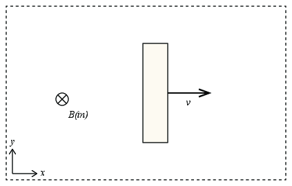
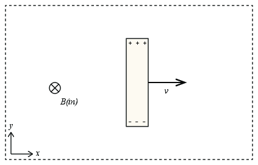
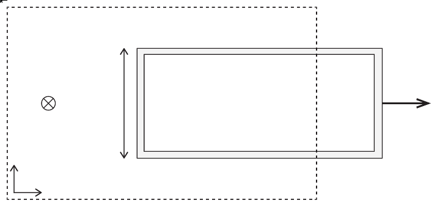
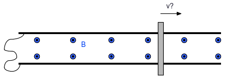

En kvadratisk krets er i et område med et uniformt (i rommet) og konstant (i tiden) magnetfelt. Kan kretsen roteres om en akse langs en av sidene på kretsen uten at en emf dannes i kretsen? Diskuter for forskjellige orienteringer av rotasjonsaksen i forhold til retningen til det magnetiske feltet.
A copper plate is placed between the poles of an electromagnet with a magnetic field perpendicular to the plate. When the plate is pulled out a noticeable force is necessary and the force required increases with the velocity of the plate. Explain this phenomenon.
En lang, rett leder passerer gjennom sentrum av en metallring. Lederen står normalt på planet til ringen. Hva skjer hvis strømmen i lederen endres? Forklar!
(Based on a tutorial by Steven Pollock)
A neutral metal bar is being pulled at constant velocity, speed \( v \), to the right through a uniform magnetic field of magnitude \( B \), as shown. The bar has been moving for some long time, and has achieved a dynamic steady-state.

a) What is the magnetic force on charges in the bar (direction and magnitude)?
\( \vec{B} = QvB \y \)
For a charge \( Q \) that moves with the bar, the force from the magnetic field is $$ \begin{equation} \vec{F} = Q \vec{v} \times \vec{B} \; . \tag{10.1} \end{equation} $$ where \( \vec{v} = v \x \) and \( \vec{B} = -B \z \). We get $$ \begin{equation} \vec{F} = Q v \x \times (-B) \z = -QvB \x \times \z = -QvB (-\y ) = QvB \y \; . \tag{10.2} \end{equation} $$
b) In the diagram, sketch the distribution of charges in the bar.

c) What is the electric field in the bar (direction and magnitude)?
Remember that the bar has reached a dynamic steady-state.
In equilibrium, the electric field must balance the force due to the magnetic field: \( Q\vec{E} + \vec{F}_B = Q \vec{E} + QvB \y = 0 \). This gives \( \vec{E} = -vB \y \).
Now consider a rectangular metal loop of height \( L \), moving to the right with speed \( v \), which is exiting a region with a constant magnetic field, magnitude \( B \).

d) The emf around any loop, \( C \), is defined as \( e = \oint_C \vec{f} \cdot d \vec{l} \), where \( \vec{f} \) is the force per charge. What is the emf around the metal loop? (You should do this without using Faraday's law).
We can calculate the emf using various strategies.
First, we can find the emf by using the magnetic force on the charge due to the motion of the circuit. We found above that the magnetic force on a charge in the element of length \( L \) is \( \vec{F} = QvB \y \) for the part of the circuit along the \( y \)-axis. The force per unit charge is therefore \( \vec{f} = \vec{F}/Q = vB \y \) for this element.
We can rewrite the emf as $$ \begin{equation} e = \oint_C \vec{f} \cdot d \vec{l} = \int_{C_1} \vec{f} \cdot d \vec{l} + \int_{C_2} \vec{f} \cdot d \vec{l} + \int_{C_3} \vec{f} \cdot d \vec{l} + \int_{C_4} \vec{f} \cdot d \vec{l} \; , \tag{10.3} \end{equation} $$ where \( C_1 \) is the part along the \( y \)-axis inside the magnetic field.
For the two parts along the \( x \)-axis, we notice that the force will be normal to the circuit, and hence will not contribute to the emf integral. And for part along the \( y \)-axis outside the field, there is no field, and hence no force.
The total emf is therefore $$ \begin{equation} e = \int_{C_1} \vec{f} \cdot d \vec{l} \; . \tag{10.4} \end{equation} $$ We need to define the direction of integration. We choose this to be clockwise around the circuit. The integral is then: $$ \begin{equation} e = L v B \; , \tag{10.5} \end{equation} $$ which is also the total emf.
e) What is the magnetic flux, \( \Phi \), through the metal loop? (Define any new symbols used.)
We define the positive direction of the circuit as the clockwise direction. The surface normal is then in the \( - \z \) direction. The flux is positive, $$ \begin{equation} \Phi = \int_S \vec{B} \cdot d \vec{S} = B L (d-vt) \; , \tag{10.6} \end{equation} $$ where \( d-vt \) is the length of the part of the circuit inside the magnetic field. (We notice that this indeed decreases with time).
f) Compute the time derivative of the flux through the loop \( d\Phi/dt \) and compare with your computed emf. There is a +/- sign that you should worry about.
We find the emf from Faraday's law: $$ \begin{equation} e = - \frac{d\Phi}{dt} = - \frac{d}{dt}\left( B L (d-vt) \right) = - \left( -B L v \right) = BL v \; . \tag{10.7} \end{equation} $$ This is indeed the same as we found from the first approach.
Faraday's law on differential form is $$ \begin{equation} \nabla \times E = -\frac{\partial \vec{B} }{\partial t} \; . \tag{10.8} \end{equation} $$
a) Consider a very long solenoid of radius \( R \) with \( n \) turns per length and current \( I \). Compute the \( \vec{B} \)-field everywhere. (You can assume that the \( \vec{B} \)-field is zero outside the solenoid.)
\( B = \mu_0 I n \)
We find the magnetic field from Ampere's law. First, we notice that the \( \vec{B} \)-field will be on the form \( \vec{B} = B(r) \hat{z} \), where the \( z \)-axis is along the axis of the solenoid. We argue that \( B \) can only have a radial dependency due to the cylindrical symmetry and the long length of the solenoid (infinite length). We argue that a current element \( I d \vec{l} \) will contribute to a \( \vec{B} \)-field along the \( z \)-axis, and therefore the \( \vec{B} \)-field will also be directed along \( z \).
It then remains to determine \( B(r) \). We place a loop with one line of length \( l \) along the axis at a distance \( r \) and one line of length \( l \) along the axis outside the solenoid. The parts of the loop normal to \( \vec{B} \) will not contribute the the line integral. We find that $$ \begin{equation} \oint_C \vec{B} \cdot d \vec{l} = B(r_{in}) l - B(r_{out}) l = \mu_0 I_{in} \tag{10.9} \end{equation} $$ where \( I_{in} = nl I \) and we assume that the field outside the solenoid is zero, \( B(r_{out})=0 \). Thus, we see that the \( \vec{B} \)-field inside the solenoid is homogeneous and equal to \( B = \mu_0 I n l /l = \mu_0 I n \).
b) Suppose the current \( I \) in the solenoid is increasing at a steady rate \( I(t) = C t \), where \( C \) is a constant. Where do you think there is an \( \vec{E} \)-field? (Inside the solenoid? Outside? Everywhere? Nowhere? ) What do you think the \( \vec{E} \)-field looks like? For now, just use your intuition, we’ll check with calculations later.
c) Use Faraday’s Law in integral form to compute the electric field inside the solenoid. Specify the loop you chose for the integral.
Use a circle of radius \( r \) with a plane normal to the axis of the solenoid, centered on the axis. We expect \( \vec{E} \) to be the same along this circle. We do not expect any component along the solenoid axis or in the radial direction (why?). For the azimuthal component, we apply Faraday's law. The flux is \( \Phi = \pi r^2 B = \pi r^2 \mu_0 I n \). We see that the emf is \( e = - d \Phi/dt = - \pi r^2 \mu_0 C n \), where \( C = dI/dt \). The emf corresponds to \( e = \oint_C \vec{E} \cdot d \vec{l} = 2 \pi r E \), hence \( E = - \pi r^2 \mu_0 C n /(2 \pi r) = - \mu_0 r C n/2 \).
d) Use Faraday's law to compute the \( \vec{E} \)-field outside the solenoid.
While there is no \( \vec{B} \)-field outside the solenoid, the flux through a circle of radius \( r \) is still \( \Phi = \pi R^2 B = \pi R^2 \mu_0 I n \), and \( d\Phi/dt = \pi R^2 \mu_0 C n \), where \( C = dI/dt \). The emf is therefore \( e = - d\Phi/dt = - \pi R^2 \mu_0 C n = 2 \pi r E \), and therefore \( E = - (1/2) R^2 \mu_0 C n/r \).
Vi skal i denne oppgaven se på hva som skjer med et fleksibelt ledende bånd i et magnetfelt. Vi ser på et bånd som er formet som en sirkel laget av et materiale med motstand \( R \). Båndet befinner seg i et homogent magnetisk felt og ligger i et plan normalt på feltet.
a) Skisser systemet og innfør nødvendige symboler til å beskrive systemet.
b) Anta at diameteren til båndet endrer seg med en konstant hastighet \( v_0 \). Finn strømmen i båndet – både retning og størrelse.
c) Kontroller at svaret ditt stemmer med Lenz lov.
d) Hvordan kan du bruke et Amperemeter til å finne ut om båndet utvider seg eller krymper?
e) Er dette et fysisk mulig magnetfelt?
f) Hva blir nå strømmen i båndet?
En stav med masse \( m \) går på skinner i et magnetfelt. Skinnene er koblet sammen med en ledning ved \( x=0 \), slik at staven og skinnene sammen med denne ledningen danner en lukket krets. Avstanden mellom skinnene er \( l \), og motstanden i staven er \( R \).

Vi skal foreløpig anta at skinnene og ledningen er ideelle ledere, slik at den totale motstanden i kretsen er \( R \). Ved tiden \( t=0 \) beveger staven seg i positiv \( x \)-retning med hastighet \( v_0 \).
a) Beregn emf'en i kretsen med Lorentz' kraftlov, og indiker bidraget fra de forskjellige delene av kretsen.
Enhver ladning inni staven vil oppleve en kraft \( \mathbf{F}_B = q\mathbf{v} \times \mathbf{B} \) fra det magnetiske feltet. Dette vil føre til at det settes opp et elektrisk felt over staven, siden positive ladninger dras den ene veien, og negative ladninger den andre veien. Spenningen slutter å øke når kraften \( \mathbf{F}_E = q\mathbf{E} \) fra \( E \)-feltet er motsatt like stor som kraften fra \( B \)-feltet. Det skjer når \( E = vB \). Siden den magnetiske kraften er like stor på alle ladninger i lederen, så må det elektriske feltet bli uniformt over staven. Emf-en som settes opp blir derfor \( \varepsilon = vBl \).
Merk: Her blir det veldig klart hvorfor det er nyttig å snakke om emf, og ikke om spenning. Når vi snakker om emfen, så kan vi se på hvilken spenning som oppstår i denne delen av kretsen, uten å forholde oss til hva som skjer i resten av kretsen. For når strømmen faktisk begynner å går, så vil hele spenningsfallet også tas på staven, slik at emf'en den gir ikke setter opp noen spenning over andre komponenter.
b) Beregn emf'en med Faradays lov. Stemmer denne med emf'en du regnet ut i forrige oppgave?
c) Finn størrelse og retning på strømmen i kretsen.
d) Bestem bevegelsen til staven for \( t>0 \). Kan du sjekke om svaret stemmer ved å bruke energibevaring?
Vi skal i resten av oppgaven anta at det er motstand i skinnene, og at disse skinnene har resistivitet \( \rho \) og tverrsnittareal \( A \). Staven og ledningen mellom skinnene antas nå å være ideelle ledere. Vi kan få dette til å bli en god tilnærming ved å velge et litt dårlig ledende materiale for skinnene.
e) Hva er motstanden i kretsen som funksjon av posisjonen \( x \) til staven?
f) Lag et program som beregner bevegelsen til staven når den starter ved \( x=1 \text{m} \) med hastighet \( v_0 \).
Du skal nå lage en bremsemekanisme for en rollercoaster. Du har tilgjengelig elektromagneter som lar deg sette opp et vilkårlig felt \( B(x) \) langs de siste 100 meter av rollercoasteren, og du kan velge selv hvordan du vil plassere kabelen som kobler skinnene sammen. Anta at akslingen mellom bakhjulene på vognene er ledende, mens de øvrige akslingene er isolerende.
g) Gjør simuleringer for å avgjøre hva som vil være et fornuftig \( B \)-felt, og hvor det er lurt å plassere kabelen. (Denne deloppgaven er større enn de andre deloppgavene. Vi stiller som absolutt krav for å få obligen godkjent at du har gjort et ærlig forsøk på denne deloppgaven).
Du trenger å finne eller gjette på verdier for massen og hastigheten til vognene når oppbremsingen starter.